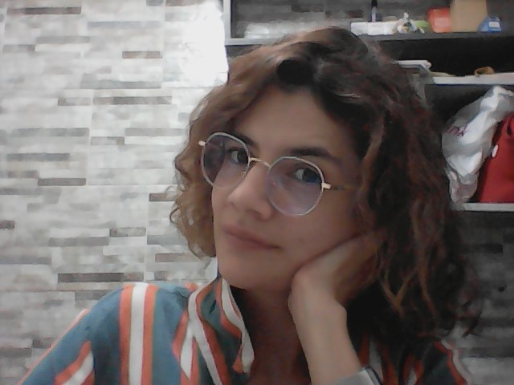

DAYSSI JOHANNA PESELLIN TRONCOSO
CV
pesemmarea@hotmail.com - pesemmarea@gmail.com

Información Relevante
Estudios
-Técnico en operación y programación de computadores
-Profesional en Psicología
-Diplomado en Gestión Humana
-Desarrollo Web e Ingles en formación
Habilidades
-Conocimientos en sistemas
-Dominio basico del idioma ingles
-Experiencia en relaciones con clientes potenciales
-Observación y analisis de los contextos
Experia Laboral
- Servicio al cliente y ventas.
- Carteras preventivas (cobranza)
- Gestión Humana (selección, reclutamiento, entrevistas y bienestar laboral.)
Actualmente no me encuentro laborando
Hobbies
*Uso de bicicleta
*Ir al cine
*Cocinar
*Compartir tiempo con mi hijo
*Viajar
Toda la información aqui escrita es veridica, gracias por la atención prestada.